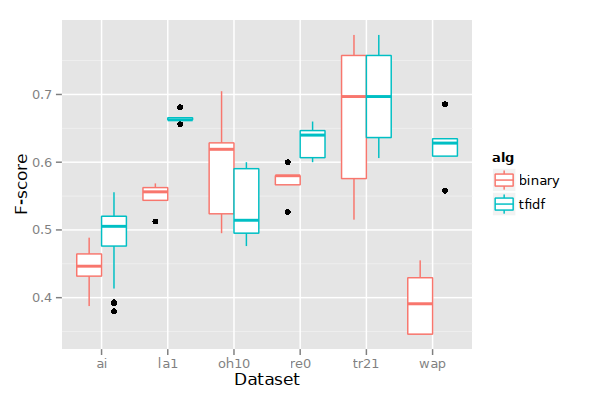
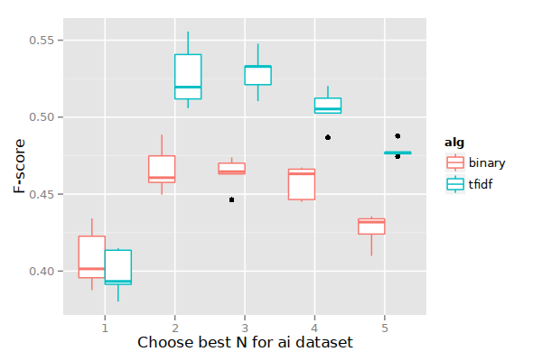

Naïve Bayesian classification
Table of Contents
Feature vectors
Documents are simply binary word vectors. No tf-idf transformation is done.
Category vectors
Each category vector is represented as a series of probabilities, one probability per word (each vector dimension represents a word, just like a document feature vector). Each probability means, "the probability of this word being present in a document that is a member of this category." Thus, the category vector has terms \(C_c = (p_{c1}, p_{c2}, \dots, p_{ck})\), and
$$p_{ci} = P(w_i|C_c) = \frac{d_{ci}+1}{d_{i}+|C|},$$
where \(d_{ci}\) is the number of documents in \(C_c\) that have word \(i\) (anywhere in the document, any number of occurrences), \(d_i\) is the number of documents in any category that have word \(i\), and \(|C|\) is the number of categories. We add 1 and add \(|C|\) so that \(P(w_i|C_c)\) is never equal to 0. (This is called Laplace smoothing.)
Algorithm
We assume, for simplicity, that the occurrences of words in documents are completely independent (this is what makes the method "naïve"). This is patently false since, for instance, the words "vision" and "image" often both appear in documents about computer vision; so seeing the word "vision" suggests that "image" will also appear in the document.
We further assume that the order the words appear in the document does not matter.
Because we make this independence assumption, we can calculate the probability of a document being a member of some category quite easily:
$$P(\hat{X}|C_c) = \prod_i P(w_i|C_c),$$
where \(P(w_i|C_c) = p_{ci}\) (from the definition above).
Now, Bayes' theorem gives us:
$$P(C_c|\hat{X}) = P(\hat{X}|C_c)P(C_c) / P(\hat{X}),$$
with,
$$P(C_c) = \frac{n_c + 1}{n + |C|},$$
where \(n_c\) is the number of documents in category \(C_c\) and \(n\) is the number of documents overall. Again, we use Laplace smoothing; this allows us to avoid probabilities equal to 0.0.
Since we want to find the category \(C_c\) that makes the quantity maximal, we can ignore \(P(\hat{X})\) because it does not change depending on which category we are considering.
Thus, we are actually looking for:
$$\arg\max_{C_c} P(C_c|\hat{X}) = \arg\max_{C_c} P(\hat{X}|C_c)P(C_c)$$
We just check all the categories, and choose the single best or top \(N\).
A problem with tiny values
With a lot of unique words, we create very small values by multiplying many \(p_{ci}\) terms. On a computer, the values may become so small that they may "underflow" (run out of bits required to represent the value). To prevent this, we just throw a logarithm around everything:
$$\log P(\hat{X}|C_c)P(C_c) = \log P(\hat{X}|C_c) + \log P(C_c),$$
and furthermore,
$$\log P(\hat{X}|C_c) = \log \prod_i P(w_i|C_c) = \sum_i \log P(w_i|C_c)$$
So our multiplications turn to sums, and we avoid the underflow problem. Rewriting again, we ultimately have this problem:
$$\arg\max_{C_c} (\sum_i \log P(w_i|C_c)) + \log P(C_c)$$
Evaluation
These graphs show the performance of the naïve Bayes approach on various datasets (compare with results from the document classification notes). The calculations described above are represented as the "binary" algorithm in the graphs. The "tfidf" algorithm, as applied in a naïve Bayes context, uses slightly different calculations that have not been described in these notes.


The book Introduction to Information Retrieval gathered some published results for classification tasks. We can see that naïve Bayes is usually not as good as k-nearest neighbor (which we did learn about) nor support vector machines (which we didn't learn about).
| Dataset | Naïve Bayes | k-nearest neighbor | Support vector machines |
|---|---|---|---|
| earn | 0.96 | 0.97 | 0.98 |
| acq | 0.88 | 0.92 | 0.94 |
| money-fx | 0.57 | 0.78 | 0.75 |
| grain | 0.79 | 0.82 | 0.95 |
| crude | 0.80 | 0.86 | 0.89 |
| trade | 0.64 | 0.77 | 0.76 |
| interest | 0.65 | 0.74 | 0.78 |
| ship | 0.85 | 0.79 | 0.86 |
| wheat | 0.70 | 0.77 | 0.92 |
| corn | 0.65 | 0.78 | 0.90 |
I also performed a Spam detection experiment, using the Spambase dataset. With naïve Bayes I was able to achieve ~80% accuracy.
Benefits of naïve Bayes
- It is very fast. In the table above, while naïve Bayes does not perform as well, it is significantly more efficient than either k-nearest neighbor or support vector machines. The latter, support vector machines, are painfully slow (at least in the training phase).
Drawbacks of naïve Bayes
- Accuracy is low, as seen in the table above.